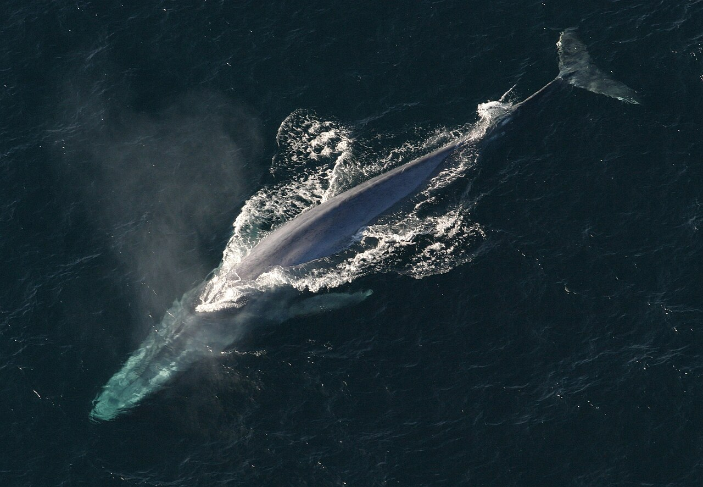
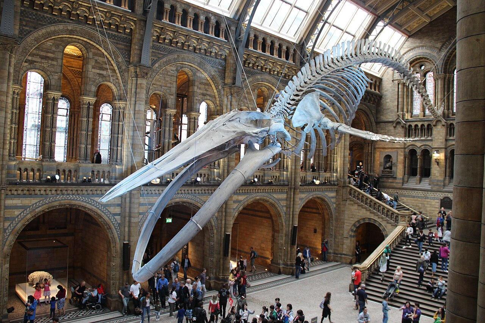
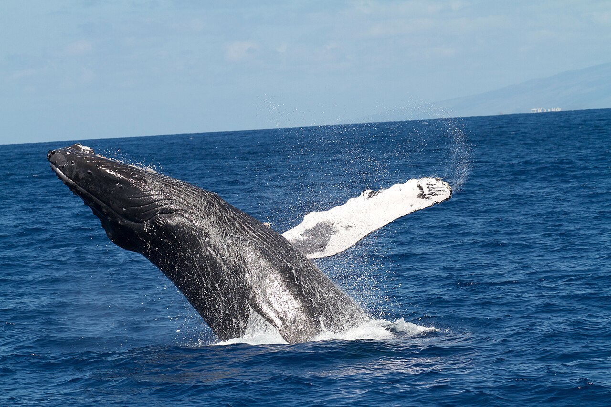
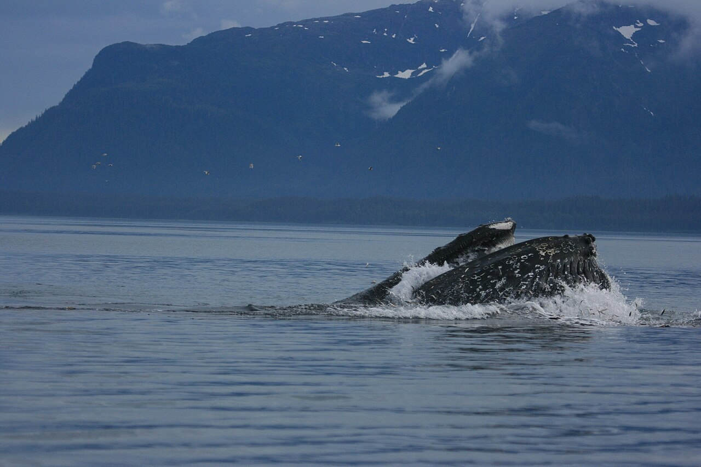
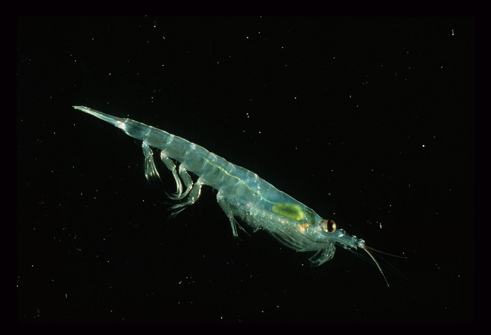
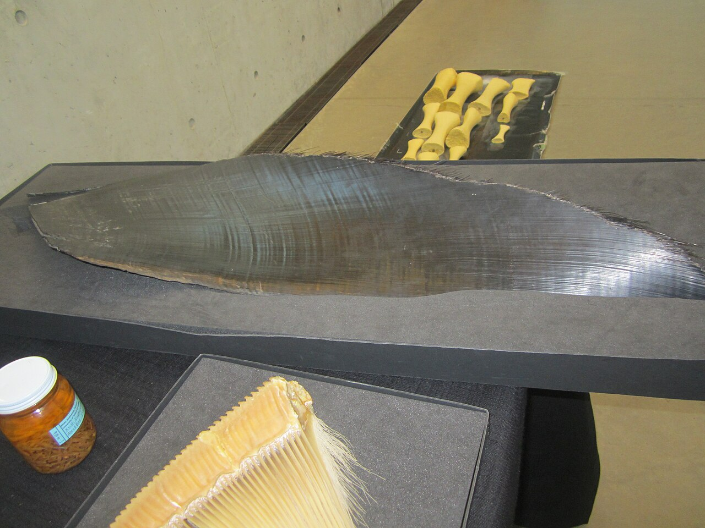
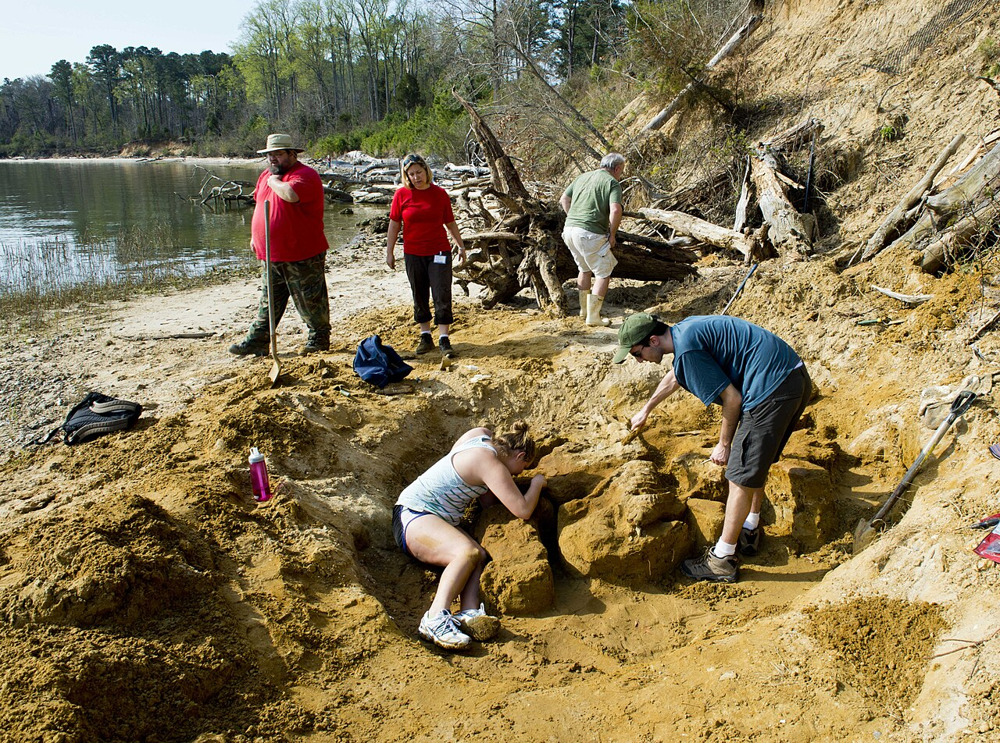
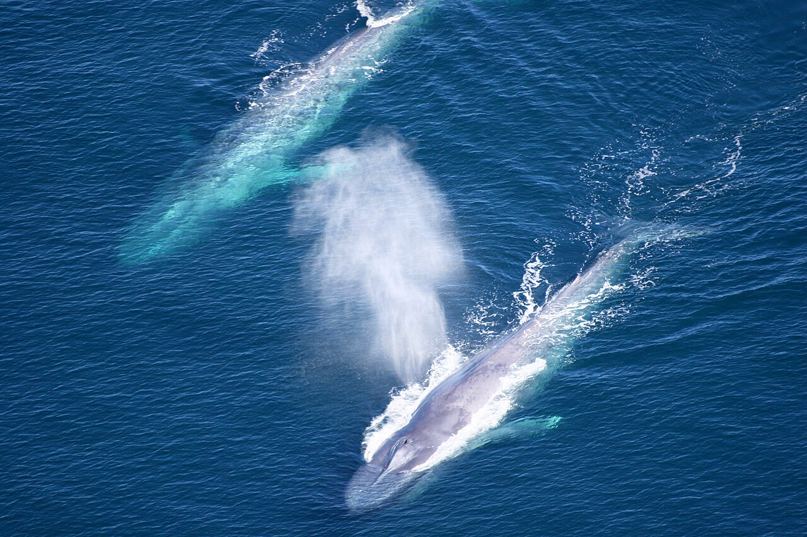

自然・科学 Nature & Scienceクジラは、なぜあんなに大きいのか？
シロナガスクジラは、恐竜よりも重い、地球の歴史で最大級の動物です。その大きさを支えているのは、海の水と、ひと口で大量に食べるしくみ。大きさくらべと年表の図で、巨大化の理由をたどってみませんか。
2026.10.23 UP 約5分で読める 文：SOMOSOMO編集部
写真：Anim1754／NOAA Photo Library（撮影年不明、パブリックドメイン）
ロンドン、2017年7月。自然史博物館の大ホールに、長さ25.2メートル、221個の骨からなるシロナガスクジラの骨格がつり下げられました。それまで同じ場所で来館者を迎えていたのは、恐竜ディプロドクスの骨格の複製「ディッピー」。恐竜に代わって、クジラが博物館の顔になったのです。
入り口に立つと、骨格は頭の上を覆うように広がります。それでも、これは骨だけです。生きていたときは肉と脂肪をまとって、さらにひと回り大きかったはずです。シロナガスクジラは、知られているかぎり、地球に現れた動物の中で最大級 とされています。では、なぜクジラだけが、これほど大きくなれたのでしょうか。
In a word
水の浮力 が重さを支えてくれる海で、小さなエサをひと口で大量に とる食べ方を手に入れ、さらに数百万年前からエサが一か所に濃く集まる海 になったから。大きな体は、その海でいちばん得をする形だったと考えられています。
01
The Largest Ever
長さは恐竜といい勝負、重さはクジラの圧勝
まず、大きさをはっきりさせておきましょう。科学的に測られたシロナガスクジラの最長の記録は29.9メートル。重さの記録では、1947年に南極海で測られた全長27.6メートルのメスが約190トン でした。長さの記録と重さの記録は、別のクジラのものです。
陸の最大級の恐竜とくらべてみます。南米で化石が見つかったアルゼンチノサウルスは、全長30〜35メートルほどと推定されています。長さだけなら、ほぼ互角 です。
ところが重さは、推定の一つで約75トン。シロナガスクジラの最大級の記録は、その2倍をこえます。首と尾が長い恐竜にくらべて、クジラは胴体が太く、中身がぎっしり詰まっている のです。
Fig.01 恐竜・ゾウ・人と、同じ縮尺でくらべると
0 10m 20m 30m
アルゼンチノサウルス（恐竜）
全長 約30〜35m・重さ 約75トン（推定）
シロナガスクジラ
最大級で 全長 約30m・重さ 約190トン
アフリカゾウ 肩高 約3.2m・約6トン
人 身長 1.7m
見どころは、いちばん下の小さなゾウと人。同じ縮尺にすると、ほとんど点のようです。恐竜は全長30mで描きました。恐竜の全長と重さは化石からの推定で、研究によって幅があります。クジラの「約30m」と「約190トン」は別々の個体の記録です。形はわかりやすくした模式図です。

骨格だけで、ホールの天井いっぱい ロンドン自然史博物館のシロナガスクジラ「ホープ」。1891年にアイルランドの海岸に打ち上げられた個体の骨で、エサをとろうと潜っていく姿で組まれています。下を歩く人とくらべてみてください。写真：Blue Whale Skeleton in Great Hall ／Gary Todd（2017年、CC0）
02
Held Up by Water
陸では脚が限界、海では水が支えてくれる
陸の動物が大きくなるとき、いちばんの壁になるのは自分の重さ です。体の大きさ（身長）が2倍になると、重さはおよそ8倍になります。ところが、それを支える骨や脚の太さ（断面の面積）は、同じ形のままなら4倍にしかなりません。
大きくなるほど、脚にかかる負担はどんどん重くなります。だからゾウの脚は柱のように太く、巨大な恐竜も太い脚で体を支えていました。陸では、体を大きくするほど、骨と脚がたいへんになるのです。
海では事情がちがいます。水の中では、体が押しのけた水の重さの分だけ、上向きの力「浮力」がはたらきます。クジラの体は海水とあまり変わらない重さなので、体重のほとんどを水が支えてくれるのです。 脚がいらないので、体を大きくする壁が一つ消えるのです。
Fig.02 大きくなると、重さは表面よりも速く増える
同じ形のまま
大きくすると…
一辺の長さ
表面積
体積（重さ）
体積あたりの表面積
1 2 3
6 24 54
1 8 27
6 3 2
見どころは、いちばん下の赤い数字が小さくなっていくところ。体積（重さ）は長さの3乗で増えますが、表面積や骨の断面は2乗でしか増えません。陸では脚が重さに追いつかなくなり、逆に体の熱は、大きいほど逃げにくくなります。
この図には、もう一つの意味があります。熱は体の表面から逃げていきます。大きな体ほど、重さのわりに表面が小さいので、体温を保ちやすい のです。水は空気よりずっと熱を奪いやすいので、冷たい海で暮らすクジラにとって、大きな体と分厚い脂肪の層は、どちらも寒さへの備えになると考えられています。

水の外に出ると、重さがよくわかる 海面から跳び上がるザトウクジラ。ふだんは水が支えている数十トンの体が、このときだけ空中に出て、大きな水しぶきを上げて落ちます。ハワイの海洋保護区で撮影されました。写真：HIHWNMS - humpback whale breaching ／National Marine Sanctuaries, NOAA（2014年、パブリックドメイン）
03
One Giant Gulp
1匹ずつではなく、群れごとのみ込む
浮力だけでは、大きな体は保てません。体が大きいほど、たくさん食べなければならない からです。NOAAによると、最大級のシロナガスクジラは1日に約6トンものオキアミを食べることもあります。ナンキョクオキアミは、大きくても体長6センチほどのエビに似た生き物です。
1匹ずつ追いかけていては、とても間に合いません。シロナガスクジラやザトウクジラのなかまは、オキアミの群れに口を大きく開けて突っ込み、海水ごと一気にのみ込む 「突進採餌（ランジ・フィーディング）」でエサをとります。のどには、じゃばらのようなひだがあり、風船のようにふくらみます。
そのあと口を閉じ、上あごから下がる「ひげ板（くじらひげ）」の間から水だけを押し出して、オキアミをこしとります。歯の代わりに、ブラシのような板でエサを集めるのです。



口・エサ・ひげ板 1枚目は、口を開けて海面に突き出したザトウクジラ（アメリカ・アラスカ州のグレイシャーベイ国立公園）。2枚目は、ナンキョクオキアミ（1匹を大きく写したもの）。3枚目は、奥の黒い板がシロナガスクジラのひげ板で、内側のブラシのような毛がエサを引っかけます。写真：Lunge Feeding Humpback Whale ／NPS（2014年、パブリックドメイン）、Euphausia superba ／Dr. Wayne Trivelpiece, NOAA（1990年、パブリックドメイン）、Blue whale baleen ／Nitahieb（2011年、CC0）
この食べ方は、大きな体ほど得をします。体に記録計をつけてシロナガスクジラを調べた研究（Goldbogen ほか、2011年）では、大きな個体が濃い群れに突っこんだときのひと口は、オキアミ最大約500キログラム、約45万キロカロリー に達すると見積もられました。人が1日に必要な量（約2,000キロカロリー）の200日分以上です。突進にかかるエネルギーの、最大で200倍以上です。
口が大きいほど、ひと口で入るエサは多くなります。ただし、エサがまばらだと、突進のたびに損をしてしまいます。大きな口が生きるのは、エサがぎっしり集まった場所 なのです。
ひと口で、突進にかかるエネルギーの200倍以上を取り戻す。
04
Giants Are New
巨大なクジラは、意外に「新しい」
クジラの祖先は、もともと陸の動物でした。約4,850万年前、今のパキスタンにいたパキケトゥスは、体長1〜2メートルほどの4本脚の動物 で、水辺で暮らしていたと考えられています。そこから長い時間をかけて、脚をひれに変え、海へ出ていきました。
意外なのは、その後です。シロナガスクジラやザトウクジラのように、歯のかわりにひげ板を持つ「ひげクジラ」のなかまは3,000万年以上前に現れましたが、2017年に化石の頭の骨から体長を見積もった研究（Slater ほか）によると、長いあいだ最大でも10メートル未満 でした。10メートルをこえるクジラが次々に現れ、小さな種が姿を消していったのは、遅くとも約450万年前より後。多くは数百万年前以降とされ、研究によって幅があります。
Fig.03 クジラが巨大になったのは、最後のほんの一瞬
ひげクジラは10m未満
パキケトゥス
4本脚・水辺で暮らす
約2,500万年前までに
ひげでこしとる食べ方
遅くとも約450万年前〜
10mをこえる
クジラが次々に
現れる
5,000万 4,000万 3,000万 2,000万 1,000万 今
いまから何年前か
見どころは、右端の赤い帯の細さ。クジラの歴史約5,000万年のうち、巨大なクジラがいるのは最後の1割に満たない時間です。灰色の帯は、ひげクジラの最大の種でも10m未満だったとされる時代（約1,200万年前ごろまで）。その後もしばらく、大きな種はまれでした。年代はおおよそで、研究によって幅があります。
なぜ、その時期だったのでしょうか。研究チームが注目したのは、海の変化 です。地球の寒冷化が進んだ約300万年前ごろから、季節によって強い風が吹く海が広がり、深い海の栄養が表面にわき上がる「湧昇（ゆうしょう）」が強まったと考えられています。
そうした海では、エサが季節と場所をかぎって、濃く集まります。集まったエサをひと口で大量にとり、次のエサ場まで長い距離を泳いでいきます。 それには大きな体が有利だった、という説が有力です。ただし、この時代の化石は少なく、ほかの要因もあったかもしれません。

巨大化の前のクジラを掘る アメリカ・バージニア州のヨーク川の岸辺で、700万〜900万年前のクジラの化石を掘り出すボランティアたち。こうした化石の大きさを積み重ねることで、クジラがいつ大きくなったのかがわかってきました。写真：Volunteers excavate a whale fossil ／U.S. Navy, Jesse A. Hyatt（2013年、パブリックドメイン）
05
By the Numbers
ひと口で、オキアミ500キログラム
190トン 記録に残るシロナガスクジラの最大級の重さ（全長27.6mのメス）1947年の記録。Wikipedia 英語版「Blue whale」
500kg エサの濃い場所での、ひと口のオキアミの量（最大の見積もり）Goldbogen ほか、2011年
450万年前 遅くともこのころより後に、10mをこえるひげクジラが次々に現れたSlater ほか、2017年

オキアミを食べに来た2頭 アメリカ・カリフォルニア州のチャネル諸島国立海洋保護区で、上空から撮影されたシロナガスクジラ。夏から秋にかけて、オキアミを食べにこの海へやってきます。写真：CINMS - Two Blue Whales Aerial Photo ／National Marine Sanctuaries, NOAA（2007年、パブリックドメイン）
Here's the Fun Part
ここが面白い！
「大昔の生き物ほど大きい」と思いがちですが、クジラは逆です。巨大なひげクジラが現れたのは、地球の歴史から見ればごく最近のこと。史上最大級の動物と、私たちは同じ時代を生きている のです。
しかもその大きさは、クジラの体の工夫だけでできたものではありません。浮力で重さを支える海、季節ごとにエサを1か所へ集める風と海流。クジラの大きさは、海そのものが作った形 ともいえます。
次に海を眺めたら、その水がクジラの体を支え、風がエサを集めていることを思い出してみてください。あの大きさは、海と一緒にできあがったものなのです。